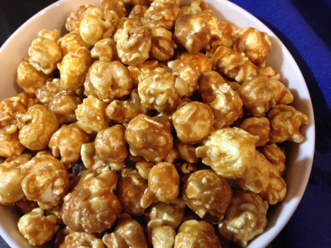

Caramel Corn

Prep: 10 min.
Cook: 1 hour
Total: 1 hour 10 min.
Ingredients
- 1 cup butter
- 2 cup packed brown sugar
- 1 tsp salt
- 1/2 cup light corn syrup
- 1 tsp baking soda
- 6 quarts popped popcorn
Steps
- Preheat oven to 200 degrees F.
- Combine the butter, brown sugar, salt, and corn syrup in a heavy saucepan. Bring the mixture to a boil over medium heat, and boil for 5 minutes.
- Remove from heat; add baking soda and stir until well combined.
- Place popcorn in a large roaster pan; pour the hot caramel mixture over the popcorn and toss to coat well. Work quickly so that the caramel doesn’t start to thicken before you're done coating all of the popcorn.
- Bake for 1 hour, stirring every 15 minutes.
- Let the caramel corn cool, then store in an airtight container.